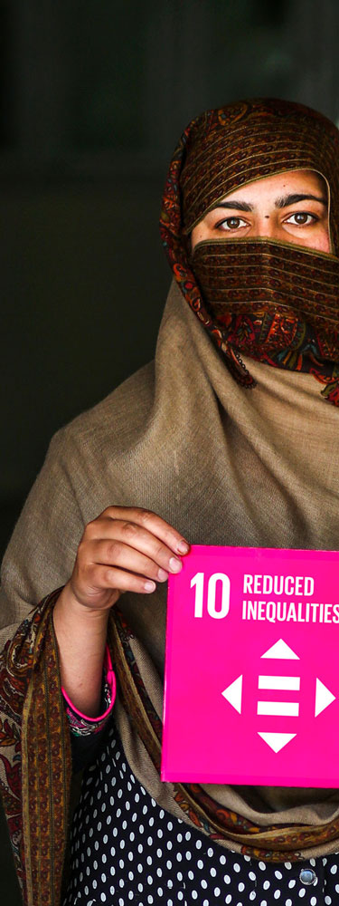
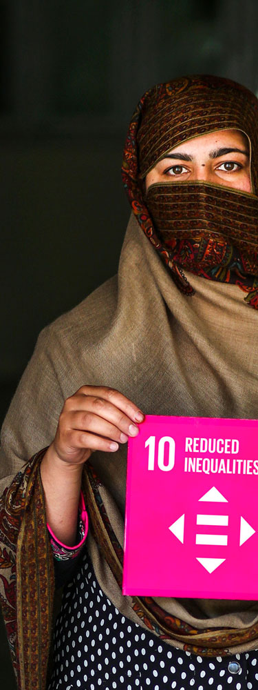

Our work
What
We
Do
Eradicating poverty is the first of the Sustainable Development Goals. But lifting people out of poverty isn’t enough, in and of itself. While great strides have been made — poverty halved between 1990 and 2015 – inequality continues to grow.

“We are re-writing the methodology with which we want the world to understand poverty, inequality, and human development for the 21st century.
Achim Steiner
UNDP AdministratorMeasuring
inequality
In 1990 UNDP changed the way we look at poverty with the launch of its Human Development Index - the first report of its kind to measure development not just by wealth, but by health and education.
We followed it with the Multidimensional Poverty Index, the Inequality Adjusted Human Development Index, and the Gender Inequality Index. Together these make the case for studying overlapping deprivations which multiply exponentially and deprive people, especially women, of the chance to achieve their potential.
 

Take action